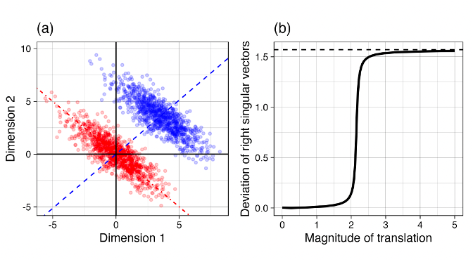
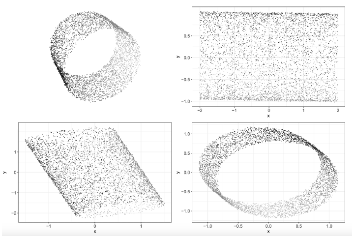

Publications
Published
2024
- Human-Algorithmic Interaction Using a Large Language Model-Augmented Artificial Intelligence Clinical Decision Support System
Niroop Rajashekar, Yeo Eun Shin, Yuan Pu, Sunng Chung, KY, Mauro Giuffrè, Colleen Chan, Theo Saarinen, Allen Hsiao, Jasjeet Sekhon, Ambrose Wong, Leigh Evans, Rene Kizilcec, Loren Laine, Terika Mccall, and Dennis Shung.
CHI Conference on Human Factors in Computing Systems.
Publisher's Site - On the Wasserstein median of probability measures
KY, Dennis Shung, and Mauro Giuffrè.
Journal of Computational and Graphical Statistics.
arXiv Code Publisher's Site - Systematic review: The use of large language models as medical chatbots in digestive diseases
Mauro Giuffrè, Simone Kresevic, KY, Johannes Dupont, Jack Huebner, Alyssa Grimshaw, and Dennis Shung.
Alimentary Pharmacology & Therapeutics.
Publisher's Site - Bayesian Optimal Two-sample Tests for High-dimensional Gaussian Populations
Kyoungjae Lee, KY, and Lizhen Lin.
Bayesian Analysis.
arXiv Publisher's Site - Adoption of a gastroenterology hospitalist model and the impact on inpatient endoscopic practice volume: a controlled interrupted time-series analysis
Dennis Shung, Darrick Li, KY, Kenneth Hung, Loren Laine, and Michelle Hughes.
iGIE.
Publisher's Site - Detection of Gastrointestinal Bleeding with Large Language Models to Aid Quality Improvement and Appropriate Reimbursement
Neil Zheng, Vipina Keloth, KY, Daniel Kats, Darrick Li, Ohm Deshpande, Hamita Sachar, Hua Xu, Loren Laine, and Dennis Shung.
Gastroenterology.
Publisher's Site - Predicting response to non-selective beta-blockers with liver–spleen stiffness and heart rate in patients with liver cirrhosis and high-risk varices
Mauro Giuffrè, Johannes Dupont, Alessia Visintin, Flora Masutti, Fabio Monica, KY, Dennis Shung, Lory Crocè, and The NSBB-Elasto-Response-Prediction Group.
Hepatology International.
Publisher's Site - Optimizing large language models in digestive disease: strategies and challenges to improve clinical outcomes
Mauro Giuffrè, Simone Kresevic, Nicola Pugliese, KY, and Dennis Shung.
Liver International.
Publisher's Site - Validation of an Electronic Health Record–Based Machine Learning Model Compared With Clinical Risk Scores for Gastrointestinal Bleeding
Dennis Shung, Colleen Chan, KY, Shinpei Nakamura, Theo Saarinen, Neil Zheng, Michael Simonov, Darrick Li, Cynthia Tsay, Yuki Kawamura, Matthew Shen, Allen Hsiao, Jasjeet Sekhon, and Loren Laine.
Gastroenterology.
Publisher's Site
2023
- On the Spherical Laplace Distribution
KY and Dennis Shung.
International Conference on Information Fusion (FUSION).
arXiv Publisher's Site - Single-cell analysis reveals inflammatory interactions driving macular degeneration
Manik Kuchroo, Marcello DiStasio, Eric Song, Eda Calapkulu, Le Zhang, Maryam Ige, Amar Sheth, Abdelilah Majdoubi, Madhvi Menon, Alexander Tong, Abhinav Godavarthi, Yu Xing, Scott Gigante, Holly Steach, Jessie Huang, Guillaume Huguet, Janhavi Narain, KY, George Mourgkos, Rahul Dhodapkar, Matthew Hirn, Bastian Rieck, Guy Wolf, Smita Krishnaswamy, and Brian Hafler.
Nature Communications.
Publisher's Site - Evaluating ChatGPT in Medical Contexts: The Imperative to Guard Against Hallucinations and Partial Accuracies
Mauro Giuffrè, KY, and Dennis Shung.
Clinical Gastroenterology and Hepatology.
Publisher's Site - Assessing the Usability of GutGPT: A Simulation Study of an AI Clinical Decision Support System for Gastrointestinal Bleeding Risk
Colleen Chan, KY, Sunny Chung, Mauro Giuffrè, Theo Saarinen, Niroop Rajashekar, Yuan Pu, Yeo Eun Shin, Loren Laine, Ambrose Wong, Rene Kizilcec, Jasjeet Sekhon, and Dennis Shung.
Machine Learning for Health (ML4H) Symposium.
arXiv Publisher's Site
2022
- Network Distance Based on Laplacian Flows on Graphs
Dianbin Bao, KY, and Lizhen Lin.
IEEE International Conference on Big Data (Big Data).
arXiv Code Publisher's Site - Parameter estimation and model-based clustering with spherical normal distribution on the unit hypersphere
KY and Changhee Suh.
Computational Statistics and Data Analysis.
arXiv Code Publisher's Site - Rdimtools: An R package for Dimension Reduction and Intrinsic Dimension Estimation
KY and Dennis Shung.
Software Impacts.
arXiv Code Publisher's Site - Learning Subspaces of Different Dimensions
Brian St. Thomas, KY, Lizhen Lin, Lek-Heng Lim, and Sayan Mukherjee.
Journal of Computational and Graphical Statistics.
arXiv Code Publisher's Site - Geometric learning of functional brain network on the correlation manifold
KY and Hae-Jeong Park.
Scientific Reports.
Code Publisher's Site
2021
- Re-visiting Riemannian geometry of symmetric positive definite matrices for the analysis of functional connectivity
KY and Hae-Jeong Park.
NeuroImage.
Code Publisher's Site
2020
- Data transforming augmentation for heteroscedastic models
Hyungsuk Tak, KY, Sujit K. Ghosh, Bingyue Su, and Joseph Kelly.
Journal of Computational and Graphical Statistics.
arXiv Publisher's Site
2019
- Volume change pattern of decompression of mandibular odontogenic keratocyst
Jin Hoo Park, Eun-Jung Kwak, KY, Young-Soo Jung, and Hwi-Dong Jung.
Maxillofacial Plastic and Reconstructive Surgery.
Publisher's Site
2016
- Vision-based detection of loosened bolts using the Hough transform and support vector machines
Young-Jin Cha, KY, and Wooram Choi.
Automation in Construction.
Publisher's Site
Preprint
- 
- Shape-Preserving Dimensionality Reduction : An Algorithm and Measures of Topological Equivalence
Byeongsu Yu and KY (2021).
arXiv